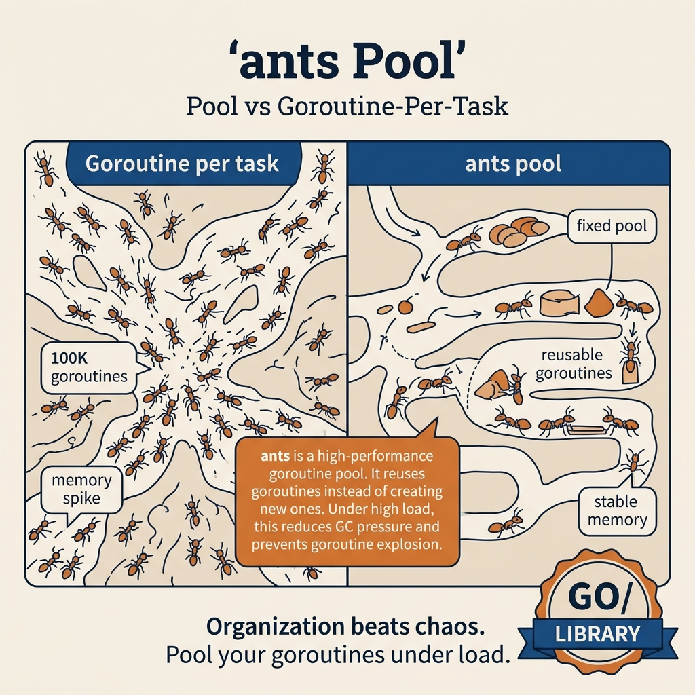

Ants (phát triển bởi panjf2000) là thư viện quản lý **Goroutine Pool** mã nguồn mở nổi tiếng và có hiệu năng cao nhất trong thế giới Go (đạt hơn 12K+ stars trên GitHub). Nó cung cấp một bể chứa (pool) các goroutines đã được tạo sẵn và tự động điều phối để tái sử dụng chúng xuyên suốt các tác vụ thay vì khởi tạo luồng mới liên tục.
Trong các bài toán tải cao (high-throughput), việc khởi tạo hàng triệu goroutine rồi dọn dẹp liên tiếp sẽ gây ra chi phí cấp phát bộ nhớ cực lớn trên Heap và làm quá tải Garbage Collector (GC). Ants giải quyết triệt để bài toán này bằng cách giữ cho các Goroutines luôn ấm (always warm), tái sử dụng tài nguyên thông minh và tự động scale-down khi rảnh rỗi.

Tại sao cần Goroutine Pool như Ants?
Go được ca ngợi là có Goroutines siêu nhẹ (chỉ tốn khoảng 2KB RAM khởi tạo ban đầu). Tuy nhiên, "siêu nhẹ" không có nghĩa là "miễn phí". Khi chạy hàng triệu tasks/giây:
Việc tạo & xoá goroutine liên tục tạo ra hàng tá biến rác trên Heap. Ants tái sử dụng goroutines giúp giảm chi phí malloc và GC áp lực lên đến hơn 90%!
Hệ điều hành giới hạn file descriptors, băng thông mạng hoặc RAM. Ants đảm bảo ứng dụng không bao giờ spawn luồng vượt ngưỡng giới hạn vật lý quy định.
Một goroutine chay bị panic không được bắt sẽ lập tức giết chết toàn bộ tiến trình ứng dụng. Ants tích hợp sẵn cơ chế chặn đứng panic tại từng worker và bảo vệ Server luôn hoạt động liên tục.
Ants tự động quét dọn và giải phóng các workers không làm việc (idle) lâu hơn một thời gian nhất định (ví dụ: sau 5 giây) để trả bộ nhớ RAM lại cho hệ thống.
So sánh: Ants vs Tunny vs errgroup.SetLimit
| Thư viện / Cơ chế | Kiểu Pool | Tái sử dụng Goroutine | Hỗ trợ Panic Recovery | Hỗ trợ Pre-allocate RAM |
|---|---|---|---|---|
| Ants Pool | Dynamic (Tự co giãn thông minh) | ✅ Rất cao (Core Feature) | ✅ Có sẵn cấu hình chặn lỗi | ✅ Có sẵn (WithPreAlloc) |
| Tunny | Fixed (Cố định cứng số lượng) | ✅ Có | ❌ Phải tự viết tay bên ngoài | ✅ Có |
| errgroup.SetLimit(n) | Fixed (Chỉ giới hạn số luồng tối đa) | ❌ Không (Luôn sinh luồng mới) | ❌ Phải tự bắt lỗi độc lập | ❌ Không hỗ trợ |
Sơ đồ kiến trúc Ants Pool
Lớp lót điều phối (Worker Array): Thay vì tạo goroutine riêng lẻ, Ants quản lý các cấu trúc worker chứa channel riêng biệt. Khi có task được đưa vào thông qua Submit, Ants sẽ lấy ra một worker nhàn rỗi (Idle) từ Queue, đẩy task vào channel nội bộ của worker đó để kích hoạt luồng xử lý thực tế, bảo tồn luồng cực kỳ hiệu quả.
Bạn cần xử lý đồng loạt 10,000 công việc (ví dụ: cào thông tin sản phẩm, gọi API ngoài, nén file ảnh...).
Nếu bạn viết mã nguồn thô sơ kiểu spawn goroutine tự do go doWork(), máy chủ của bạn sẽ sinh ra 10,000 goroutines đồng thời.
Hệ quả là máy chủ cạn kiệt CPU hoặc RAM do chuyển ngữ cảnh quá độ (context switching). API đích của bên thứ ba phát hiện tải tăng đột biến sẽ chặn IP của bạn ngay lập tức do vi phạm Rate Limit.
package main import ( "fmt" "sync" "sync/atomic" "time" "github.com/panjf2000/ants/v2" ) func main() { var completedTasks atomic.Int64 // ━━━━━━━━━━━━━━━━━━━━━━━━━━━━━━━━━━━━━━━━━ // ants.NewPool: Khởi tạo pool với tối đa 10 workers hoạt động đồng thời // Option: // - WithPreAlloc(true): Cấp phát RAM cho workers ngay lập tức để tối ưu hoá // - WithExpiryDuration: Purge workers rảnh rỗi sau 5 giây để thu hồi bộ nhớ // - WithPanicHandler: Tự động khôi phục luồng bị đổ vỡ (Crash) // ━━━━━━━━━━━━━━━━━━━━━━━━━━━━━━━━━━━━━━━━━ pool, err := ants.NewPool(10, ants.WithPreAlloc(true), ants.WithExpiryDuration(5*time.Second), ants.WithPanicHandler(func(err interface{}) { fmt.Printf("🔥 Bắt được lỗi Panic trong worker: %v\n", err) }), ) if err != nil { panic(err) } // ⚠️ BẮT BUỘC: Release pool khi không còn sử dụng để thu hồi RAM defer pool.Release() var wg sync.WaitGroup // Submit 1,000 tác vụ chạy song song - chỉ duy nhất tối đa 10 workers chạy đồng thời for i := 0; i < 1000; i++ { wg.Add(1) // Submit(fn func()) nhận một hàm không tham số err := pool.Submit(func() { defer wg.Done() // Mô phỏng tác vụ ngốn CPU nhẹ completedTasks.Add(1) time.Sleep(10 * time.Millisecond) }) if err != nil { wg.Done() fmt.Printf("Submit tác vụ lỗi: %v\n", err) } } wg.Wait() fmt.Printf("📊 KẾT QUẢ: Hoàn tất xử lý %d / 1,000 tác vụ song song!\n", completedTasks.Load()) fmt.Printf("👥 Workers đang chạy lúc cuối: %d\n", pool.Running()) fmt.Printf("👥 Workers nhàn rỗi sẵn sàng: %d\n", pool.Free()) }
Note & Conclusion: Đây là cách sử dụng căn bản nhất của Ants. Bằng việc chốt chặn cứng 10 workers, hệ thống của bạn được vận hành trơn tru mà không hề lo sợ bị sập tài nguyên vật lý hay bị API bên ngoài block.
Khi bạn sử dụng hàm Submit(func()) cơ bản, mỗi tác vụ bạn gửi vào là một **Closure Function**. Việc khởi tạo hàng triệu Closure trong vòng lặp sẽ ép Go Runtime liên tục cấp phát RAM trên Heap để lưu trữ các biến bị đóng gói (variables capture), gây lãng phí bộ nhớ và GC cực kỳ mệt mỏi.
Đồng thời, việc truyền biến lặp vào Closure dễ gây ra lỗi logic kinh điển trong Go (các Goroutine dùng chung giá trị cuối của vòng lặp).
Giải pháp: Sử dụng PoolWithFunc. Bạn định nghĩa duy nhất 1 hàm xử lý chung lúc khởi tạo Pool. Mỗi task chỉ cần truyền tham số đầu vào dạng interface{} qua phương thức Invoke(). Cực kỳ an toàn và tiết kiệm tài nguyên!
package main import ( "fmt" "sync" "time" "github.com/panjf2000/ants/v2" ) // ImagePayload là cấu trúc dữ liệu đầu vào cho tác vụ resize ảnh type ImagePayload struct { ID int Width int Height int } func main() { var wg sync.WaitGroup // ━━━━━━━━━━━━━━━━━━━━━━━━━━━━━━━━━━━━━━━━━ // NewPoolWithFunc: Định nghĩa trước hàm xử lý chung // Tiết kiệm chi phí khởi tạo Closure liên tục // ━━━━━━━━━━━━━━━━━━━━━━━━━━━━━━━━━━━━━━━━━ pool, err := ants.NewPoolWithFunc(3, func(payload interface{}) { defer wg.Done() // Ép kiểu dữ liệu an toàn từ interface{} task := payload.(ImagePayload) // Mô phỏng resize ảnh dựa trên diện tích ảnh pixels := task.Width * task.Height time.Sleep(time.Duration(pixels/100000) * time.Millisecond) fmt.Printf("📸 Resize hoàn tất ảnh #%d (%dx%d) thành (%dx%d)\n", task.ID, task.Width, task.Height, task.Width/2, task.Height/2) }) if err != nil { panic(err) } defer pool.Release() imagesToResize := []ImagePayload{ {ID: 1, Width: 1920, Height: 1080}, {ID: 2, Width: 3840, Height: 2160}, {ID: 3, Width: 1280, Height: 720}, {ID: 4, Width: 2560, Height: 1440}, {ID: 5, Width: 800, Height: 600}, } for _, img := range imagesToResize { wg.Add(1) // Invoke(payload) gửi tham số trực tiếp vào worker nhàn rỗi // Lưu ý: Invoke sẽ BLOCK luồng gọi nếu toàn bộ workers đang bận err := pool.Invoke(img) if err != nil { wg.Done() fmt.Printf("Lỗi Invoke: %v\n", err) } } wg.Wait() fmt.Println("🎉 Hoàn thành xử lý resize ảnh song song!") }
Tại sao nên ưu tiên PoolWithFunc: PoolWithFunc triệt tiêu hoàn toàn rủi ro race condition do closure capture gây ra. Đây là cách tiếp cận sạch sẽ, tường minh và có hiệu năng tối ưu nhất khi ứng dụng cần chạy hàng ngàn tác vụ cùng loại liên tiếp.
Trong môi trường High-Load thực tế, việc chặn (Block) luồng API Gateway khi Goroutine Pool bị đầy là điều tối kỵ (gây nghẽn cổ chai). Chúng ta cần cơ chế Backpressure Control linh hoạt:
Nếu Pool đầy → Cho phép xếp hàng chờ tối đa 100 tác vụ → Vượt quá 100 tác vụ → Từ chối nhận thêm lập tức (Non-blocking Reject) để báo lỗi nhanh về Client hoặc kích hoạt cơ chế Circuit Breaker. Đồng thời, ta phải có khả năng Co giãn động (Tune Size) số lượng workers ngay khi Server đang chạy mà không cần khởi động lại.
package main import ( "fmt" "log" "time" "github.com/panjf2000/ants/v2" ) func main() { // ━━━━━━━━━━━━━━━━━━━━━━━━━━━━━━━━━━━━━━━━━ // Cấu hình Pool cấp độ Production // ━━━━━━━━━━━━━━━━━━━━━━━━━━━━━━━━━━━━━━━━━ pool, err := ants.NewPool(10, ants.WithPreAlloc(true), ants.WithExpiryDuration(10*time.Second), // ants.WithNonblocking(true) chỉ định: nếu pool hết workers nhàn rỗi, // hàm Submit() sẽ KHÔNG BLOCK mà trả về ngay lập tức lỗi ants.ErrPoolOverload ants.WithNonblocking(true), // Giới hạn hàng đợi chờ tối đa là 50 tác vụ ants.WithMaxBlockingTasks(50), ants.WithPanicHandler(func(p interface{}) { log.Printf("🔥 Worker Panic Recovered: %v", p) }), ) if err != nil { panic(err) } defer pool.Release() // Vòng lặp giám sát (Monitor Routine) go func() { for { fmt.Printf("📊 [POOL STATUS] Workers Đang chạy: %d | Rảnh rỗi: %d | Tổng Dung lượng: %d\n", pool.Running(), pool.Free(), pool.Cap()) time.Sleep(1000 * time.Millisecond) } }() // Gửi dồn dập 40 tác vụ chạy lâu vào Pool để gây quá tải tải trọng for i := 0; i < 40; i++ { err := pool.Submit(func() { time.Sleep(1500 * time.Millisecond) // Giả lập tác vụ nặng }) if err != nil { // Với WithNonblocking(true), lỗi ErrPoolOverload sẽ văng ra lập tức khi đầy tải fmt.Printf("❌ Tác vụ bị từ chối do quá tải Pool: %v\n", err) } } time.Sleep(2 * time.Second) // ━━━ TUNE SIZE (Co giãn nóng kích cỡ Pool) ━━━ // Scale-up nâng kích cỡ lên tối đa 30 workers ngay lập tức khi tải tăng pool.Tune(30) fmt.Printf("⚡ [SCALE UP] Tải tăng cao, co giãn kích cỡ pool thành công lên: %d workers!\n", pool.Cap()) time.Sleep(3 * time.Second) }
Non-blocking vs Blocking: Sử dụng WithNonblocking(true) giúp Server API của bạn phản hồi ngay lập tức lỗi HTTP 503 (Service Unavailable) thay vì kẹt cứng luồng người dùng khi Server quá tải. Rất trực quan và chuẩn thiết kế Microservices.
Doanh nghiệp yêu cầu import file CSV sản phẩm khổng lồ (100,000 dòng dữ liệu) vào PostgreSQL thông qua GORM. Quy trình xử lý chuẩn gồm: Đọc file CSV dòng-dòng → Parse dòng thành Struct sản phẩm → Chèn theo Batch 500 bản ghi vào Database.
Vấn đề: 1. Việc parse CSV tạo ra vô số chuỗi (Strings) và byte slices tạm thời trên Heap gây áp lực GC kinh hoàng. 2. Nếu chèn từng dòng một, Database sẽ nghẽn round-trip. Chèn đồng thời không kiểm soát sẽ gây tràn Connection Pool.
Giải pháp cực hạn:
1. Dùng sync.Pool tái sử dụng bộ nhớ đệm (Byte Buffer), giảm thiểu 40% allocations.
2. Dùng ants.Pool để khống chế tối đa 8 workers chèn DB đồng thời (tương thích 80% Connection Pool của GORM).
3. Dùng GORM CreateInBatches gộp 500 bản ghi/lần chèn để đạt tốc độ tối đa.
package main import ( "bytes" "context" "encoding/csv" "fmt" "io" "log" "os" "strconv" "sync" "sync/atomic" "github.com/panjf2000/ants/v2" "gorm.io/driver/postgres" "gorm.io/gorm" "gorm.io/gorm/logger" ) // ProductModel đại diện cho bảng sản phẩm đích type ProductModel struct { ID uint `gorm:"primaryKey;autoIncrement"` SKU string `gorm:"column:sku;uniqueIndex"` Name string Price float64 Stock int } // ━━━ sync.Pool: Tái sử dụng Byte Buffer ━━━ var byteBufferPool = sync.Pool{ New: func() interface{} { return bytes.NewBuffer(make([]byte, 0, 4096)) // Cấp phát sẵn 4KB RAM }, } // parseBatchRows chuyển dịch tập hàng CSV thô thành cấu trúc struct func parseBatchRows(rows [][]string) []ProductModel { buf := byteBufferPool.Get().(*bytes.Buffer) defer func() { buf.Reset() byteBufferPool.Put(buf) // Trả lại pool để luồng khác tái trưng dụng }() products := make([]ProductModel, 0, len(rows)) for _, row := range rows { if len(row) < 4 { continue } price, _ := strconv.ParseFloat(row[2], 64) stock, _ := strconv.Atoi(row[3]) products = append(products, ProductModel{ SKU: row[0], Name: row[1], Price: price, Stock: stock, }) } return products } func main() { // 1. Khởi tạo GORM PostgreSQL Connection Pool dsn := "host=localhost user=app dbname=shop port=5432 sslmode=disable" db, err := gorm.Open(postgres.Open(dsn), &gorm.Config{ Logger: logger.Default.LogMode(logger.Warn), // Tắt Auto Transaction ngầm để tăng tốc độ Batch Insert SkipDefaultTransaction: true, }) if err != nil { log.Fatal(err) } db.AutoMigrate(&ProductModel{}) // 2. Khởi tạo Ants Pool khống chế 8 luồng DB Connection song song pool, err := ants.NewPool(8, ants.WithPreAlloc(true), ants.WithPanicHandler(func(err interface{}) { log.Printf("🔥 Worker chèn DB bị sập: %v", err) }), ) if err != nil { log.Fatal(err) } defer pool.Release() // 3. Đọc dữ liệu từ file CSV file, err := os.Open("products_giant.csv") if err != nil { log.Fatal(err) } defer file.Close() csvReader := csv.NewReader(file) csvReader.Read() // Bỏ qua dòng Header đầu tiên const batchSize = 500 var wg sync.WaitGroup var totalInserted atomic.Int64 batchRows := make([][]string, 0, batchSize) batchCount := 0 log.Println("🚀 BẮT ĐẦU: Tiến trình ETL nạp tải GORM Batch + sync.Pool...") for { row, err := csvReader.Read() if err == io.EOF { break } if err != nil { continue } batchRows = append(batchRows, row) if len(batchRows) >= batchSize { batchCount++ // ⚠️ BẮT BUỘC: Tạo bản sao sâu (Deep Copy) tập hàng // Bởi vì mảng batchRows gốc sẽ bị tái lập (reset) về rỗng ngay sau dòng này rowsCopy := make([][]string, len(batchRows)) copy(rowsCopy, batchRows) currentBatchID := batchCount wg.Add(1) // Đẩy vào Ants Worker Pool chèn DB pool.Submit(func() { defer wg.Done() // Sử dụng sync.Pool giải phóng RAM khi parse products := parseBatchRows(rowsCopy) if len(products) == 0 { return } // Chèn dồn theo Batch 500 thông qua GORM err := db.WithContext(context.Background()).CreateInBatches(products, len(products)).Error if err != nil { log.Printf("❌ Batch %d lỗi: %v", currentBatchID, err) return } totalInserted.Add(int64(len(products))) }) batchRows = batchRows[:0] // Reset mảng dòng chứa dữ liệu nhanh } } // Chèn sạch phần hàng dư thừa cuối cùng nếu có if len(batchRows) > 0 { wg.Add(1) rowsRemaining := make([][]string, len(batchRows)) copy(rowsRemaining, batchRows) pool.Submit(func() { defer wg.Done() products := parseBatchRows(rowsRemaining) db.WithContext(context.Background()).CreateInBatches(products, len(products)) totalInserted.Add(int64(len(products))) }) } wg.Wait() log.Printf("🏆 HOÀN TẤT: Tổng lượng chèn DB thành công: %d sản phẩm qua %d batches!", totalInserted.Load(), batchCount) }
Sự kết hợp hoàn hảo (Synergy): Ants kiểm soát tải đồng thời bảo vệ DB Connection Pool. sync.Pool kiểm soát độ phình của Heap tránh lag máy chủ do GC. GORM Batch Insert triệt tiêu latency round-trip mạng. Bộ ba vững chãi này là chuẩn mực tối thượng của các chuyên gia khi thiết kế module Data Import doanh nghiệp!
Sử dụng Submit(func()) chung với biến vòng lặp img := images[i] capture bằng tham chiếu. Toàn bộ workers có thể sẽ cùng chạy sản phẩm cuối cùng của vòng lặp do rò rỉ tham chiếu!
Sao chép sâu biến qua t := img trước khi đưa vào closure, hoặc tối ưu nhất là dùng cấu hình Invoke(img) của PoolWithFunc.
| STT | Lỗi phổ biến | Hệ quả vận hành | Biện pháp khắc phục chuẩn chỉnh |
|---|---|---|---|
| 1 | Quên không gọi pool.Release() ở luồng chủ |
Rò rỉ tài nguyên luồng (Goroutine Leak), dung lượng bộ nhớ RAM phình to vô hạn theo thời gian | Luôn sử dụng cấu trúc bảo hộ defer pool.Release() ngay bên dưới dòng khởi tạo Pool thành công |
| 2 | Gửi tác vụ vào Pool đã gọi lệnh Release() |
Ứng dụng xảy ra Panic ngắt hệ thống đột ngột do vi phạm trạng thái đóng của pool | Đảm bảo việc gửi tác vụ hoàn tất trước khi Shutdown, hoặc sử dụng cấu trúc check trạng thái an toàn |
| 3 | Sử dụng kích cỡ Pool quá lớn vô nghĩa (ví dụ: N = 100,000 workers) | Gây lãng phí cực lớn tài nguyên RAM dự phòng và mất tác dụng bảo hộ chịu tải | Tính toán kích cỡ khoa học: Với CPU-Bound đặt size = 2 × Số Core. Với I/O-bound, đo đạc ngưỡng nghẽn DB/API đích |
Lưu ý về Type Assertion trong PoolWithFunc: Vì PoolWithFunc nhận đối số đầu vào dạng interface{}, việc ép kiểu sai loại (ví dụ: gửi nhầm con trỏ struct hoặc sai kiểu nguyên) sẽ dẫn đến lỗi Panic đứt mạch luồng tại Runtime. Hãy tạo một hàm wrapper bảo hộ kiểu (Type-safe wrapper) bên ngoài để bảo vệ tối đa tính an toàn kiểu trong dự án của bạn.
Tóm tắt cốt lõi: ants là giải pháp tối ưu RAM và GC hàng đầu khi ứng dụng Go cần xử lý dòng công việc tải trọng lớn liên tục. Ghi nhớ các nguyên tắc: (1) Luôn Release pool, (2) Dùng PoolWithFunc để triệt tiêu allocations của closures, (3) Kiểm soát Nonblocking để tránh sập treo ứng dụng khi nghẽn tải!